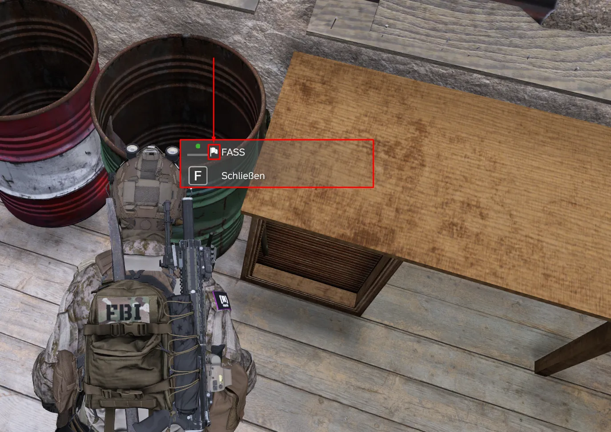
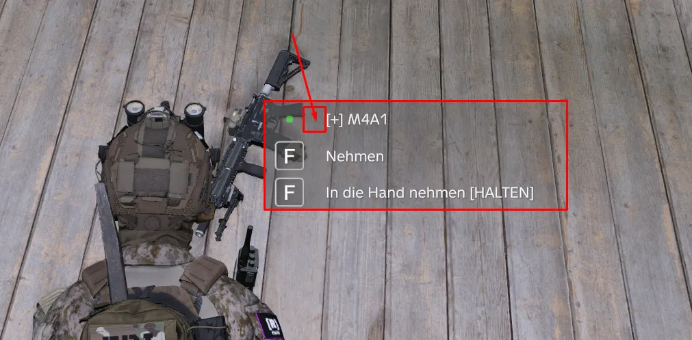

🏳️ Flaggensymbol – bleibt mein Objekt?Flag icon – will it stay?
🏳️ Flaggensymbol – bleibt mein Objekt stehen?
🏳️ Flag icon – will my object stay?
Bild 1 / Picture 1: ✅ Fass mit Flaggensymbol – geschützt / barrel with flag icon – protected

Bild 2 / Picture 2: ❌ Waffe am Boden ohne Flaggensymbol – nicht geschützt / weapon on the ground without flag icon – not protected

Schaust du ein Objekt in deiner Base an, steht vor dem Namen manchmal ein kleines weißes Flaggensymbol 🏳️. Es zeigt dir, ob das Objekt von deiner Flagge geschützt wird.
✅ Mit Flaggensymbol (Bild 1)
Das Objekt ist richtig eingetragen und steht im Bereich einer gehissten Flagge. Die Flagge frischt alle Objekte im Umkreis von 60 m einmal am Tag auf – solange sie oben ist, verschwinden sie nicht. Was in dem Objekt liegt (Fass, Kiste, Spind, Tresor), ist mit geschützt.
❌ Ohne Flaggensymbol (Bild 2)
Das Objekt wird von der Flagge nicht erfasst und kann verschwinden, sobald niemand in der Nähe ist. Mögliche Gründe:
- Es steht weiter als 60 m von der Flagge weg, oder die Flagge ist nicht gehisst.
- Es ist ein loser Gegenstand: Waffen, Kleidung, Essen usw. gehören nicht zur Base. Auf dem Boden verschwinden sie nach kurzer Zeit – eine M4A1 zum Beispiel nach 2 Stunden.
- Es ist ein Basis-Objekt, das bei uns falsch eingestellt ist – dann ist das unser Fehler, nicht deiner.
So prüfst du deine Base
1. Flagge am Flaggenmast ganz hissen. Spätestens alle 14 Tage vorbeischauen und neu hissen – die Flagge sinkt mit der Zeit.
2. Jedes Lager-Objekt kurz anschauen: Ist das 🏳️ da?
3. Lose Sachen nie auf dem Boden lagern, sondern immer in Fass, Kiste oder Spind.
4. Fehlt das Symbol an einem Basis-Objekt (Möbel, Lager, Werkbank, Tresor …), obwohl es nah an deiner gehissten Flagge steht: Mach ein Ticket in #support-ticket auf und nenne den Namen des Objekts, am besten mit Screenshot. Wir tragen es nach, danach bekommt es das Symbol und bleibt stehen.
Gut zu wissen
Basis-Objekte halten bei uns 15 Tage auch ohne Flagge. Mit gehisster Flagge werden sie jeden Tag wieder aufgefrischt.
When you look at an object in your base, there is sometimes a small white flag icon 🏳️ in front of its name. It tells you whether the object is protected by your flag.
✅ With flag icon (picture 1)
The object is set up correctly and stands within range of a raised flag. The flag refreshes every object within 60 m once a day – as long as it is up, they do not disappear. Everything inside the object (barrel, crate, locker, safe) is protected too.
❌ Without flag icon (picture 2)
The object is not covered by the flag and can disappear as soon as nobody is nearby. Possible reasons:
- It is more than 60 m away from the flag, or the flag is not raised.
- It is a loose item: weapons, clothing, food etc. are not part of the base. On the ground they disappear after a short time – an M4A1 for example after 2 hours.
- It is a base object that is set up wrong on our side – then it is our mistake, not yours.
How to check your base
1. Fully raise the flag on the flagpole. Come back and raise it again at least every 14 days – the flag sinks over time.
2. Look at every storage object: is the 🏳️ there?
3. Never store loose items on the ground – always use a barrel, crate or locker.
4. If a base object (furniture, storage, workbench, safe …) has no icon although it stands close to your raised flag: open a ticket in #support-ticket and tell us the name of the object, ideally with a screenshot. We will add it, then it gets the icon and stays.
Good to know
Base objects last 15 days on our server even without a flag. With a raised flag they are refreshed every day.